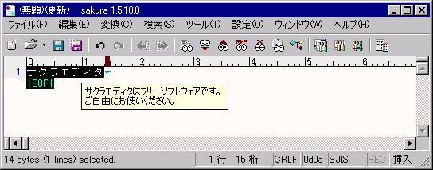

キーワードヘルプ
タイプ別設定 『支援』プロパティで、単語とその訳文を列挙したテキストファイル（辞書ファイル）を登録しておくと、キーワードヘルプが使えます。そのファイルを辞書ファイルと呼ぶことにします。
辞書ファイルに登録されている単語を選択状態にすると、対応する訳文がポップアップ表示されます。
その時に右クリックメニューを表示し、メニューのいちばん上を選ぶと、訳語がクリップボードにコピーされます。
サクラエディタは辞書ファイルを先頭から読んでいって、最初に一致した語の訳文を表示します。
辞書ファイルの書式について説明します。
[形式]
単語[[,単語]...] /// 訳語<改行>
・キーワードは複数指定可能です（同義語）。半角カンマで区切って下さい
・'\n'で訳語に改行を入れられます
・一つの定義(行)は、10キロバイト程度までです
・一桁目が';'ならコメント行とみなします
例:
林檎,リンゴ /// リンゴ\nApple
パソコン,PC,ＰＣ /// パーソナル・コンピュータ\nPersonal Computer
矩形 /// くけい
サクラエディタ /// サクラエディタはフリーソフトウェアです。\nご自由にお使いください。
ポップアップしている図
